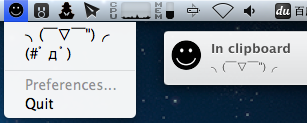
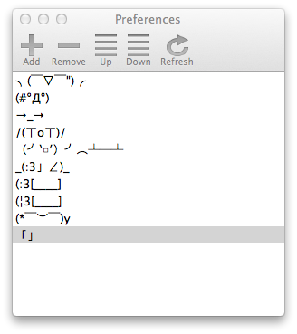

QuickSmileText - 托盘上的快捷颜文字
Posted on August 12, 2012
on mac
入了个 Macbook Air，准备全面投靠 Mac 平台，不学一点儿原生程序开发说不过去。平常在聊天时，想输入颜文字的时候往往手忙脚乱，打开网页复制，遂有此试手作，在托盘图标菜单上快速复制颜文字，成功后还有原生 Mountain Lion 的通知。

配置文件 smileTexts.plist 在用户的文稿（Documents）文件夹下，自行修改吧╮(￣▽￣“)╭。
项目地址：github.com/scturtle/QuickSmileText。
Updated at 2013-1-14:
终于还是把配置界面写了。
